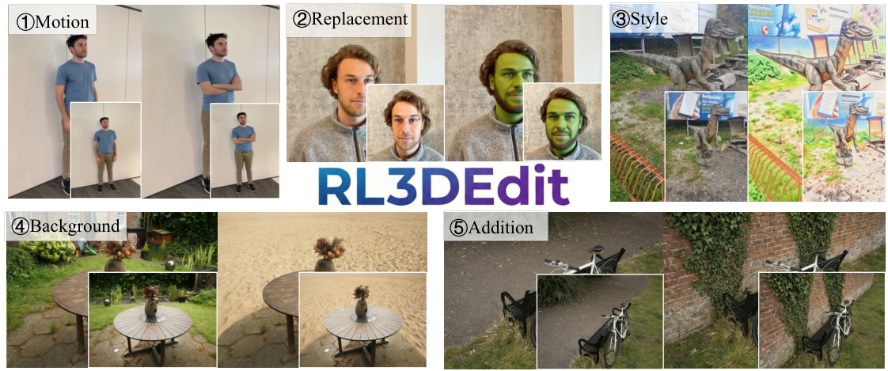
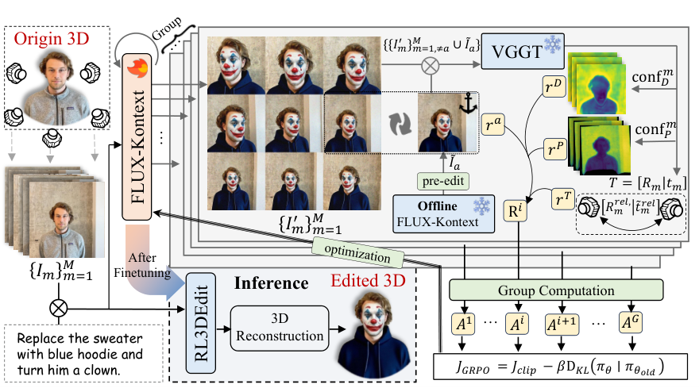
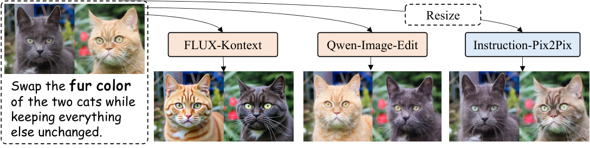
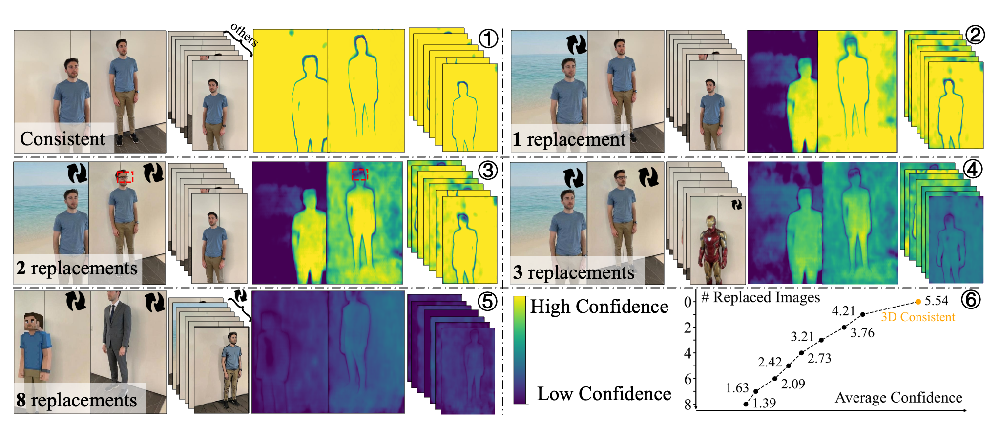
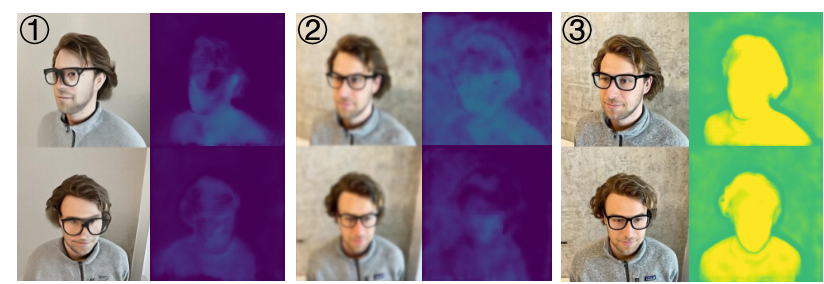
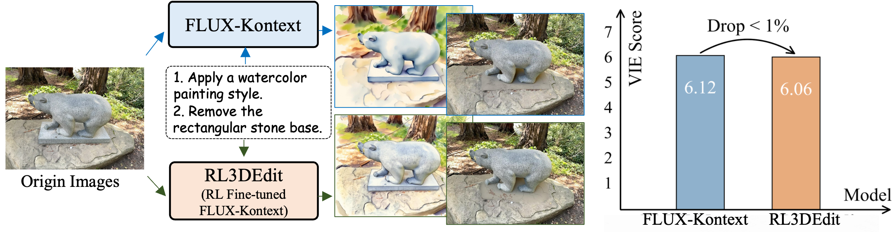
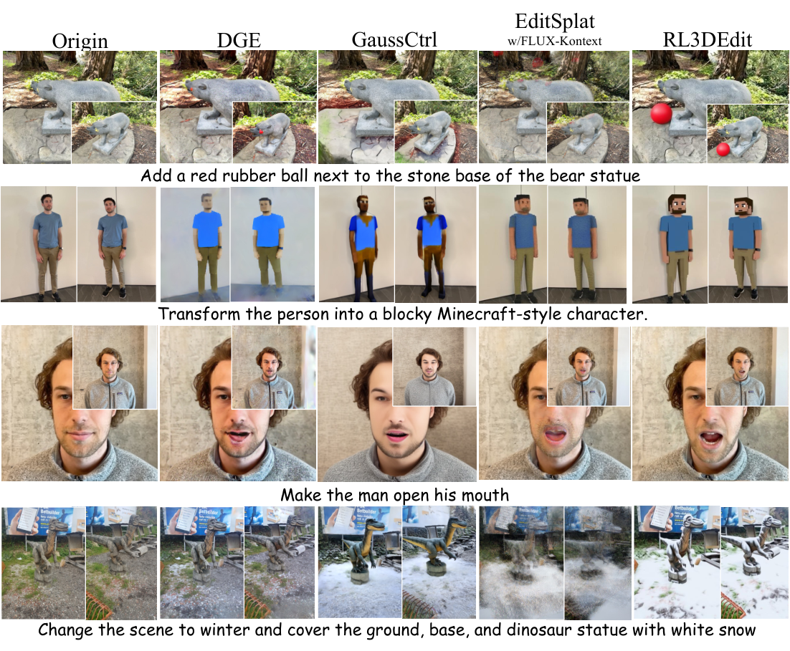
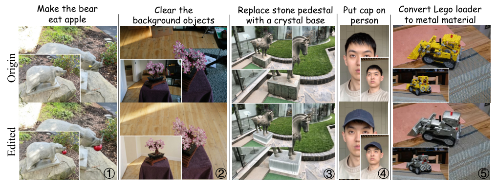
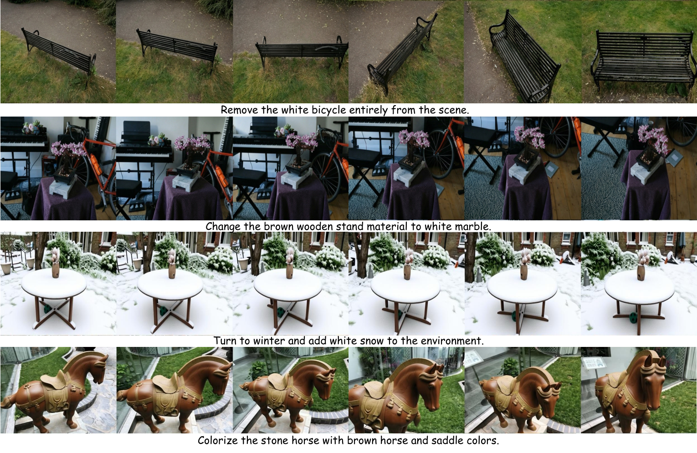
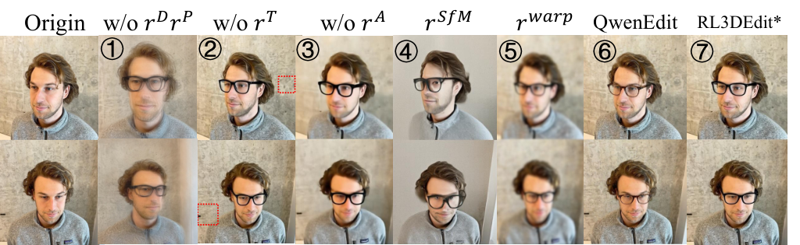

问题:3D 场景编辑需要对多视角图像做一致编辑,但 2D 编辑器逐图独立编辑必然产生跨视角不一致(伪影、漂浮物),而「3D 一致的编辑配对数据」极度稀缺,最有效的监督微调(SFT)路线走不通。方法:作者观察到「生成多视角一致的 3D 内容很难,但验证 3D 一致性是可行的」,这一不对称性天然契合强化学习——用一个可验证奖励模型(VRM)替代成对监督。具体做法:以 FLUX-Kontext 为 2D 编辑器,把同一场景 $M=9$ 个视角拼成 3×3 网格做联合编辑;以 3D 基础模型 VGGT 为「裁判」,用其输出的深度/点图置信度与相对位姿误差构造几何奖励,外加一个 anchor 保真奖励,用 GRPO 对编辑器做 LoRA 微调。结果:训练仅 1 epoch(42 小时,单卡 RTX Pro 6000,70 条指令 / 1,319 样本),推理时单趟前向即可产出 9 视角一致编辑图,再经 AnySplat 初始化 + 3DGS 微调 3,000 步得到编辑后的 3D 场景,全流程约 1.5 分钟,VIEScore 5.48,显著优于 DGE / GaussCtrl / EditSplat 及其 FLUX 强化版。

用源图深度图引导一致性(如 GaussCtrl、Tinker)。失败模式:无法处理涉及几何变化的编辑——深度先验把结果锁死在原几何上(§1: "failing to handle edits involving geometric changes")。
以 IN2N 为代表,单视角编辑后迭代精炼 3D 表示。失败模式:编辑信号本身 3D 不一致 → 模糊伪影 + 效率极低(每场景数十分钟)。
跨视角重投影注意力特征(如 DGE)。失败模式:几何不连续区域对齐误差累积,细粒度一致性无保证;且注意力操纵在 2D 编辑史上已被证明是「最终被数据监督取代的次优解」(§1)。
§2.2 还点名了两个近邻:Tinker(2026,同样用 FLUX-Kontext)依赖深度图引导(只能做保几何编辑)、引入复杂的视频模型管线、且需要 ~25K 成对样本;RL3DEdit 声称只用其 5% 的数据(1,319 样本)就达到更强泛化。高斯参数操纵类方法则「无法把『低头』这类动作指令翻译成显式高斯参数修改」。
关键假设及其失效条件:(a) 假设 VGGT 的置信度对「跨视角不一致」足够敏感且单调——论文用 Figure 5 的渐进替换实验验证了近线性关系(见 §5);(b) 假设 2D 编辑器具备多图联合编辑能力,否则 RL 探索得到一致样本的概率为零、优化直接失败(§3.2 明言);(c) 假设编辑幅度可控——极端非刚性形变(如「让人物低头」)下动作幅度歧义导致细微跨视角差异,论文 §5 自承会失败,且所有基线同样失败。这三条假设边界直接决定了它能否迁移到「修复采集数据不一致」的场景(见 §14)。
| 符号 | 含义 | 形状 / 取值 |
|---|---|---|
| $M$ | 每个样本的视角数 | 9(3×3 网格,§4.1) |
| $G$ | GRPO 组大小(独立采样次数) | 16(§4.1) |
| $I_m$ / $I'_m$ / $\tilde{I}_a$ | 源视角 / 编辑后视角 / 离线预编辑 anchor 图 | RGB 图;网格约 1568×1568(源码 bucket,单格 ~512px) |
| $\pi_\theta$ / $\pi_{\text{ref}}$ | 微调中 / 原始(冻结参考)2D 编辑器 | LoRA 参数 θ |
| $\mathrm{conf}_D$ / $\mathrm{conf}_P$ | VGGT 深度 / 点图置信度图 | 逐像素 [0,1] |
| $T_m=[R_m|t_m]$ | VGGT 预测的第 $m$ 视角外参 | $R\in\mathbb{R}^{3\times3}, t\in\mathbb{R}^3$ |
| $r^D,r^P,r^T,r^a$ | 深度置信 / 点置信 / 相对位姿 / anchor 保真奖励 | 标量 |
| $w_D{=}w_P{=}w_T{=}w_a$ | 奖励权重 | 各 0.25(§4.1) |
| $\sigma_t$ | SDE 噪声强度 | 0.8(§4.1) |
| $\beta,\epsilon,\lambda$ | KL 系数 / clip 范围 / anchor 奖励温度 | ⚠️【待核实】 论文未给数值(训练代码未开源,无法回查) |
阶段划分:①渲染多视角 → ②2D 联合编辑(唯一被 RL 训练的模块)→ ③前馈初始化 + 轻量 3DGS 微调。训练时阶段②外面套 GRPO 循环(采样 G=16 组 → VGGT 打分 → 组内优势 → LoRA 更新),推理时 ②③ 各跑一遍即结束。

§3.2 给出了一条硬性推理:RL 靠「探索多样输出 + 强化高分样本」工作。若编辑器逐图独立处理,$M$ 张图「碰巧」全部一致的概率实际为零——组内没有任何可强化的成功样本,优化直接失败。因此多图联合编辑能力是 RL 生效的必要前提。老一代 3D 编辑方法用 InstructPix2Pix 当 backbone:处理分辨率低 + 卷积局部性导致无法跨图交互。DiT 架构(FLUX-Kontext / Qwen-Image-Edit)把 $K$ 张图 tokenize 后沿序列维拼接 $X=\mathrm{Concat}(x^1,\dots,x^K)$,self-attention 权重天然跨图分布,跨视角交互「免费」获得。
rl3dedit/grid.py:12-28 的 tile_3x3 与 rl3dedit/pipeline.py:91-98)。两种实现都成立(网格图内部同样靠全局 attention 交互),但意味着发布权重绑定 3×3 网格形态:输入必须恰好 9 视角、等尺寸、row-major 排列(grid.py:18-19 硬校验 9 张)。| 步骤 | 操作 | 张量形状 | 出处 |
|---|---|---|---|
| 1 | 9 视角拼成 3×3 网格(等尺寸 resize, LANCZOS) | $[3{\times}3{\times}512]$ ≈ 1536~1568 px 见方 | grid.py:12-28 |
| 2 | 按 Kontext 分辨率桶吸附(17 个 bucket,长边 ≤1568) | $(W,H)\in$ KONTEXT_RESOLUTIONS | pipeline.py:15-20 |
| 3 | VAE 编码 → DiT(含 LoRA)去噪 | latent $[1, C, H/16, W/16]$,C=16(FLUX 规格) | pipeline.py:91-98 |
| 4 | 指令经 enhance 改写为「3×3 网格 + 3D 一致」表述 | 文本 token | prompt_enhance.py:26-30 |
| 5 | VAE 解码 → 3×3 网格 → 切回 9 视角 | 9 × $[512{\times}512{\times}3]$ | grid.py:31-42 |

该模块的监督信号:无直接监督——编辑器只通过 §7 的 GRPO 目标间接优化(LoRA),其 2D 编辑能力完全继承自预训练权重并由 KL 正则保护。
VGGT 是前馈 3D 基础模型(库内精读见 VGGT 笔记):$f\big((I_i)_{i=1}^{N}\big)=(g_i,D_i,P_i,\tau_i)_{i=1}^{N}$,输出相机参数 $g$、深度图 $D$、点图 $P$、tracking 特征 $\tau$(§3.3)。其训练时对深度/点图预测带不确定性感知置信度:
其中 $\mathrm{conf}_{\text{geo}}$ 含 $\mathrm{conf}_D$(深度)与 $\mathrm{conf}_P$(点图)。最后一项 $-\alpha\|\log\mathrm{conf}\|_1$ 是正则,防止置信度无脑坍缩到 0——这让置信度成为「模型自评把握」的可信读数。RL3DEdit 只用了 $g$(位姿)、$\mathrm{conf}_D$、$\mathrm{conf}_P$ 三个头,tracking 特征未用。
论文 §3.3 做了一个「受控破坏」实验:从 3D 资产渲染 9 张一致视图,逐张替换成独立编辑(彼此不一致)的版本,观察 VGGT 深度置信度变化(100 组 9 视角数据统计):
定量上,平均置信度随替换比例近线性下降(Figure 5⑥)。这证明置信度是「可靠且可解释」的一致性指标——这是整个奖励设计成立的实验地基。

依赖稀疏特征匹配;RL 很快学会生成无纹理图——关键点提不出来,重投影误差「平凡地小」,奖励虚高,编辑质量崩坏(VIEScore 0.97,Tab.2)。
模糊/低频图像逐像素差异天然小 → 输出糊图反而拿最低 Ph-Loss(0.065)但 VIEScore 仅 1.41;且新编辑内容无 GT 深度,warping 误差累积(S2.2)。

该模块的监督信号:VGGT 全程冻结,只前向打分;它本身在 VGGT 原文的大规模真实 3D 数据上预训练,不在本方法中更新。
逐图取置信度空间均值、再对 $M$ 视角平均。深度与点图两路冗余互补。注意:不设置信度阈值,直接用连续值做奖励,梯度信号(经 GRPO 优势)平滑。
其中 $T_m^{\mathrm{rel}}=T_{m+1}T_m^{-1}$ 为相邻视角相对变换,平移做模长归一化 $\tilde{t}=t/\|t\|_2$(消除尺度歧义,只比方向),* 号为由源资产已知相机算出的参考(GT)相对位姿。机制解释:编辑可能整体漂移绝对视角,但视角间相对关系必须保持;置信度奖励管「图之间像不像同一场景」,位姿奖励管「相机阵列还是不是原来那个阵列」——消融证明缺了它会出现细微视角漂移(§4.3,墙面细节位移)。
动机:纯几何一致性在「低频、平滑」方向上更容易拿分——没有质量锚点,RL 会滑向过平滑输出(消融③:去 $r^a$ 后输出 over-smoothed,VIEScore 4.34→更低,Ph-Loss 反而变差 0.091)。做法:离线用原始 FLUX-Kontext 对每个视角做单图编辑(经验上 >98% 直接可用),这些单图彼此 3D 不一致、但都在 FLUX 的高质量分布内;训练时随机抽 anchor 下标 $a$(同一 GRPO 组共享下标保证公平比较),送 VGGT 时用 $\tilde{I}_a$ 替换 $I'_a$:$I'_a$ 本身用 LPIPS 对齐 anchor(保编辑质量),其余视角在「含一张高质量参考」的集合里被优化几何一致性。⚠️【待核实】 温度系数 $\lambda$ 数值论文未给(训练代码未开源)。
等权是消融后的最优折中(表 S5):几何重(0.4/0.4/0.1/0.1)→ VIEScore 掉到 4.31;质量重($w_a{=}0.7$)→ 一致性崩(Ph-Loss 0.091)。

FLUX 是 flow-matching 模型,推理走确定性 ODE $\mathrm{d}x_t=v_\theta(x_t,t,c)\mathrm{d}t$(式 S2),没有随机性就无法做 GRPO 组内探索。按 Flow-GRPO 的做法改写为等价 SDE:
噪声强度 $\sigma_t=0.8$。12 步去噪(而非前作的 6 步):消融显示 6 步保真度不足,VGGT 无法准确评判一致性(VIEScore 3.91);20 步收益可忽略(5.28 vs 5.26)而训练推理成本大增(表 S5)。再用 MixGRPO(window size 4)加速收敛(§4.1)。
机制解释:GRPO 不需要独立 Critic——组内 $G{=}16$ 个候选互为基线,高于组均分的被强化、低于的被抑制;clip 把单步更新幅度限制在 $[1{-}\epsilon,1{+}\epsilon]$ 防破坏性更新;KL 项把策略钉死在原始 FLUX-Kontext 附近,既防模式坍塌、又是「保住 2D 先验」的第二道保险(第一道是 anchor 奖励)。
| 项 | 值 | 备注 |
|---|---|---|
| 基座 / 微调 | FLUX.1-Kontext-dev + LoRA rank 32, alpha 32 | §4.1 |
| 视角数 $M$ / 组大小 $G$ | 9 / 16 | 每样本探索 16 组 × 12 步推理 |
| SDE 噪声 / 去噪步 | 0.8 / 12 步 | MixGRPO window=4 |
| 训练数据 | 8 场景(IN2N/BlendedMVS/Mip-NeRF360)× 7~9 条 VLM 构造指令 = 70 prompts;每场景 18~23 组 9 视角 = 1,319 样本 | 9 视角环绕均匀采样保证重叠度 |
| 训练量 / 时长 / 硬件 | 1 epoch / 42 小时 / 单卡 NVIDIA RTX Pro 6000 | §5 自称 "~2 days" |
8 个训练场景含 Person 与 Face(表 S1):Person 场景指令含「让男子抱臂」「把陶瓷杯放进男子右手」等手部相关几何编辑;全部消融实验(Tab.2、Tab.S5)都在 200+ 样本的 face 数据集上做——人物/人脸在该方法的训练分布内,这对我们评估其人物场景适用性是加分项(见 §14)。
| 奖励项 | 公式 | 权重 | 作用 | 消融证据 |
|---|---|---|---|---|
| $r^D$ 深度置信 | $\frac{1}{M}\sum_m \mathrm{mean}(\mathrm{conf}_D^m)$ | 0.25 | 多视角几何一致性(深度头) | 去掉后 VIEScore 2.11 / Ph-Loss 0.193,严重鬼影(Tab.2①) |
| $r^P$ 点图置信 | $\frac{1}{M}\sum_m \mathrm{mean}(\mathrm{conf}_P^m)$ | 0.25 | 多视角几何一致性(点图头,冗余互补) | |
| $r^T$ 相对位姿 | $\exp(-\frac{1}{M-1}\sum(\|R^{\mathrm{rel}}-R^{\mathrm{rel}*}\|_F^2+\|\tilde t^{\mathrm{rel}}-\tilde t^{\mathrm{rel}*}\|_2^2))$ | 0.25 | 保持相机阵列几何,防视角漂移 | 去掉后 4.77 / 0.131,墙面细节位移(Tab.2②) |
| $r^a$ anchor 保真 | $\exp(-\lambda\,\mathcal{L}_{\text{LPIPS}}(I'_a,\tilde I_a))$ | 0.25 | 锚住 FLUX 编辑质量,防过平滑坍缩 | 去掉后 4.34 / 0.091,输出过平滑(Tab.2③) |
| KL 正则 | $-\beta D_{\text{KL}}(\pi_\theta\|\pi_{\text{ref}})$ | — | 防模式坍塌,保 2D 先验 | 式(S5),β 未披露 |
steps=28, guidance=2.5, seed=42(inference.py:47-49),与训练时的 12 步 SDE 探索不同——28 步是高质量 ODE 采样。指令增强用 OpenAI 兼容 API(默认 gpt-4o-mini)或确定性模板兜底(prompt_enhance.py:38-80)。| 文件 | 职责 | 关键行 |
|---|---|---|
inference.py | CLI 入口:9 视角目录或预拼网格 → 编辑 → 切分保存 | 默认 --steps 28 --guidance 2.5 --seed 42(L47-49);9 视角按文件名排序加载(L9) |
rl3dedit/pipeline.py | 权重加载 + FluxKontextPipeline 封装 | Kontext 17 个分辨率桶(L15-20);from_single_file 加载 BFL 单文件权重(L61-62);CPU offload 标注 "~24-32GB VRAM"(L51) |
rl3dedit/grid.py | 3×3 网格拼/切 | 硬校验恰好 9 张(L18-19);统一 resize 到首图尺寸(L21-23);row-major(L26-27) |
rl3dedit/prompt_enhance.py | 指令改写为「3×3 网格 + 3D 一致」表述 | LLM(OpenAI 兼容, 默认 gpt-4o-mini, temperature 0.3)或模板兜底(L26-30) |
requirements.txt | 依赖:torch≥2.4, diffusers≥0.37.1, transformers≥4.44 | Python 3.10 + CUDA 12.x(注释) |
pipeline.py:22-24)——该仓库是 gated 的,必须先在 HF 接受协议并 login(readme L66),这是第一个落地坑。pipeline.py:51);关掉 offload(--no_cpu_offload)更快但更吃显存。我们的 RTX 3090(24GB)处在下限边缘,offload 下可用但速度打折。--enhance 自动补。| 阶段 | 耗时 / 资源 | 出处 |
|---|---|---|
| RL 训练 | 42 小时,单卡 RTX Pro 6000(96GB),1 epoch | §4.1 |
| 推理编辑(9 视角) | 含在全流程 1.5 min 内;GPU 为 RTX Pro 6000 | Table 1 |
| AnySplat 前馈初始化 | <1 秒 | S2.3 |
| 3DGS 微调 | 3,000 迭代,约 40 秒(默认 lr schedule) | S2.3 |
| 对比基线耗时 | DGE 4min / GaussCtrl 12min / EditSplat 3.5min / EditSplat+FLUX 40min | Table 1 |
9 张稀疏视角直接迭代重建极易过拟合/几何退化,故不做随机初始化:先用 AnySplat(前馈 3DGS)从 9 张编辑图一次前向得到可靠初始高斯(<1s),再用官方 3DGS codebase 以传统光度损失微调 3,000 步(~40s)。相机参数用原始 GT 位姿(源资产已知,不重估)——这也是 $r^T$ 要对齐 GT 相对位姿的原因:保证编辑图的"有效相机"仍与 GT 阵列兼容,重建才能直接复用旧位姿。
| 方法 | VIEScore ↑ | CLIP-dir ↑ | Ph-Loss ↓ | 平均编辑耗时 ↓ |
|---|---|---|---|---|
| DGE | 2.81 | 0.116 | 0.086 | 4 min |
| GaussCtrl | 2.37 | 0.096 | 0.077 | 12 min |
| EditSplat | 2.72 | 0.121 | 0.081 | 3.5 min |
| EditSplat w/ FLUX-Kontext(论文复现) | 3.23 | 0.125 | 0.082 | 40 min |
| RL3DEdit(本文) | 5.48 | 0.147 | 0.076 | 1.5 min |
| 方法 | In-dist. VIEScore ↑ | In-dist. 偏好率 ↑ | In-dist. Ph-Loss ↓ | Zero-shot VIEScore ↑ | Zero-shot 偏好率 ↑ | Zero-shot Ph-Loss ↓ |
|---|---|---|---|---|---|---|
| DGE | 2.76 | 8.6% | 0.086 | 2.92 | 10.0% | 0.085 |
| GaussCtrl | 2.40 | 4.3% | 0.077 | 2.30 | 6.7% | 0.078 |
| EditSplat | 2.62 | 5.7% | 0.082 | 2.94 | 6.7% | 0.080 |
| EditSplat w/ FLUX-Kontext | 3.22 | 10.0% | 0.083 | 3.26 | 16.6% | 0.079 |
| RL3DEdit(本文) | 5.52 | 71.4% | 0.075 | 5.40 | 60.0% | 0.078 |



| 配置 | VIEScore ↑ | Ph-Loss ↓ | 解读 |
|---|---|---|---|
| ① 去掉 $(r^D,r^P)$ | 2.11 | 0.193 | 一致性奖励是命门:严重鬼影 |
| ② 去掉 $r^T$ | 4.77 | 0.131 | 视角阵列漂移(墙面细节位移) |
| ③ 去掉 $r^a$ | 4.34 | 0.091 | 滑向过平滑,编辑质量掉 |
| ④ 换成 SfM 奖励 | 0.97 | 0.201 | reward hacking:学会输出无纹理图 |
| ⑤ 换成 warping(Ph-Loss)奖励 | 1.41 | 0.065 | reward hacking:糊图拿最低 Ph-Loss 但质量崩 |
| ⑥ backbone 换 Qwen-Image-Edit | 5.43 | 0.079 | 框架可迁移,更强编辑器→更好结果 |
| ⑦ RL3DEdit*(face-only 训练) | 5.26 | 0.077 | 参考配置 |
⑤ 的重要启示:把评估指标(Ph-Loss)直接当奖励会被 hack(0.065 是全场最低 Ph-Loss 却最糊)——「可微的手工指标」不等于「好的训练信号」,这正是用学习型验证器的根本动机;论文因此只在评测时用 Ph-Loss(模糊由 VIEScore 兜底),训练时用 VGGT 置信度。

| 维度 | 配置 | VIEScore ↑ | Ph-Loss ↓ | 结论 |
|---|---|---|---|---|
| anchor 选择 | 固定第 1 视角 | 4.54 | 0.087 | 随机 anchor 让所有视角均匀学到编辑先验 |
| 随机(默认) | 5.26 | 0.077 | ||
| 去噪步数 | 6 步 | 3.91 | 0.093 | 6 步保真度不足,VGGT 判不准;20 步收益可忽略 |
| 12 步(默认) | 5.26 | 0.077 | ||
| 20 步 | 5.28 | 0.078 | ||
| 奖励权重 | 几何重($w_{D,P}{=}0.4$) | 4.31 | 0.076 | 几何过重损细节,质量过重崩一致性;等权最优 |
| 质量重($w_a{=}0.7$) | 3.97 | 0.091 | ||
| 等权 0.25(默认) | 5.26 | 0.077 |
| 方法 | 年份 | 输入假设 | 场景表示 | 监督信号 | 训练数据 | 训练时长 | 推理耗时 | 关键指标 | 开源 |
|---|---|---|---|---|---|---|---|---|---|
| DGE | 2024【待核实】 | 多视角 + 指令 | 3DGS | 跨视角注意力传播 + 逐场景优化 | —(免训练,逐场景优化) | —(每场景优化) | 4 min | VIEScore 2.81 / Ph-Loss 0.086 | 是 |
| GaussCtrl | 2024【待核实】 | 多视角 + 深度条件 | 3DGS | 深度引导注意力 + ControlNet | —(逐场景) | — | 12 min | 2.37 / 0.077 | 是 |
| EditSplat | 2025【待核实】 | 多视角 + 指令 | 3DGS | Multi-view Fusion Guidance(顺序融合) | —(逐场景) | — | 3.5 min(原 backbone)/ 40 min(换 FLUX) | 2.72 / 0.081(原);3.23 / 0.082(FLUX 版) | 是 |
| Tinker | 2026 | 少视角(1-2 张)+ 指令 | 多视角图 / 3D | 深度图引导 + 视频模型管线(SFT) | ~25K 成对样本(§2.2) | — | — | 论文未直接比;被指「只能保几何编辑」 | —【待核实】 |
| RL3DEdit | 2026 | 9 视角(3×3 网格)+ 指令 | 3DGS(AnySplat 初始化) | RL(GRPO)+ VGGT 验证器,无配对数据 | 70 指令 / 1,319 样本 | 42h(RTX Pro 6000) | 1.5 min(零逐场景优化) | 5.48 / 0.076 | 推理代码+权重(训练代码未放) |
| 范式 | 代表方法 | 核心先验 | 局限 |
|---|---|---|---|
| SDS / 迭代优化 | IN2N 系 | 2D 扩散先验 | 模糊、过平滑、慢 |
| 几何条件引导 | GaussCtrl、Tinker | 源深度 | 锁死几何,不能做形变编辑 |
| 注意力传播 | DGE | 跨视角注意力 | 细粒度一致性无保证 |
| 多视角融合引导 | EditSplat | 深度融合 + CFG 推广 | 顺序优化慢;指令难量化时出伪影 |
| RL + 基础模型验证器 | RL3DEdit | VGGT 3D 先验(验证侧) | 视角数/分辨率受 backbone token 预算约束;极端非刚性形变失败 |
库内相关笔记:验证器本体 VGGT 与其加速版 VGGT-Omega;初始化器 AnySplat 所属的前馈 3DGS 脉络见 前馈式高斯重建 2026 下半年调研 与 GaVS;3DGS 基础见 3DGS 基础与改进综述。与 EVA-Gaussian(笔记)的差异:EVA 是「前馈生成高斯」解决重建效率,RL3DEdit 是「RL 微调编辑器」解决编辑一致性,两者都把「难生成、易验证/易初始化」的不对称性换成了工程收益。
RL3DEdit 的作用域是「已有一致的 3D 资产 → 文本驱动编辑 → 得到一致的新资产」。适用:AR/VR 场景换风格/换材质/增删物体、数字人外观编辑(换衣服/加眼镜/换发型)、主体替换。不适用:从带噪采集数据做重建——它假设输入多视角天然一致(从资产渲染),不处理输入本身不一致的情形。
但这篇论文有三点可迁移价值,按可用性排序:
论文 Figure 5 证明置信度对跨视角不一致近线性敏感、且能局部化到区域。我们的 vggt_human 链路本就有 VGGT(-Omega)——把采集帧直接喂进去,手部区域置信度低的帧就是微动重灾区,可做数据体检量化指标与掩码降权依据。零训练成本,与《手部微动》笔记 Phase 0「数据与基线体检」直接对上。
⚠️【推测】 理论上可用其 motion-edit 能力(训练集含「抱臂」「把杯子放进右手」等手部几何指令)把不同手势的视角统一编辑到 canonical 手势再重建。三重障碍:发布权重只支持 9 视角 × ~512px;论文 §5 自认大幅非刚性形变失败;且编辑会改写真实手部内容,数字人场景下保真受损。只适合作为坏数据的兜底实验,不是正路。
若要训练「修复不一致采集数据」的专用模型,这套奖励设计(置信度 + 相对位姿 + anchor)可直接复用,训练成本单卡 42h 量级可接受。但属自研训练,与当前 S4 主线(运动基/形变建模)相比优先级低。
| 维度 | 判断 |
|---|---|
| 能否进 vggt_human 主线 | 否(编辑工具,非重建模块);其验证器思路可进「数据体检」环节 |
| 显存门槛 | 推理 CPU offload ~24-32GB(readme/pipeline.py:51),3090 在下限可用;训练 RTX Pro 6000 96GB × 42h,本地不可复现训练 |
| 数据成本 | 推理零成本;自训练需 8 场景级 3D 资产 + VLM 造指令 |
| 直接可用产出 | VGGT 置信度诊断(复用现有 VGGT-Omega 即可);数字人资产的文本编辑 demo |
源码 grid.py:9 GRID = 3 写死,权重绑定 3×3 网格形态;论文也把「更多视角需 streaming 管线」列为 future work。建议:训练时随机网格布局(2×2/3×3/4×4 混合)或改用 token 拼接式多图输入,解耦网格先验。
相对位姿奖励的参考 $(T^{\mathrm{rel}})^*$ 来自源资产 GT 相机——对无 GT 位姿的 in-the-wild 编辑(如随手拍照片组),该奖励项无法计算,只剩置信度奖励。建议:用源图自身的 VGGT 位姿估计当伪 GT(论文未讨论此退化路径)。
每个样本只锚 1 个视角,anchor 质量完全依赖离线 FLUX 单图编辑(>98% 可用意味着 ~2% 坏 anchor 无过滤指标兜底)。建议:多 anchor 或对 anchor 本身加 VLM 质检分。
仅 8 场景 / 70 指令;消融甚至只在 face 单场景 200+ 样本上做——组件结论的外推性有限(论文自承 "due to computational constraints")。
Ph-Loss 与 GaussCtrl 差距仅 0.001(0.076 vs 0.077),未给多次运行方差或显著性检验;VIEScore 依赖 GPT-4.1,存在 VLM 偏置。
只做静态场景编辑;编辑后场景做动画/形变的时序一致性完全未涉及。
只放出推理代码 + 权重(2026-03-11 News);$\beta,\epsilon,\lambda,\tau$ 四个关键系数无从查起,论文结论不可完整复现。
Kontext bucket 长边 ≤1568,3×3 分格后每视角 ~512px——人脸/手部等细节敏感场景直接受限,这也是为什么它当前更适合「场景级」而非「特写级」编辑。
VAE/文本编码器依赖 FLUX.1-Kontext-dev(gated),商业使用受 FLUX dev 许可约束。
RL3DEdit 的核心贡献不在某个模块的新颖性,而在一个范式判断:3D 一致性「验证易、生成难」,因此与其苦等配对数据做 SFT,不如用冻结的 3D 基础模型(VGGT)当裁判、用 GRPO 把 2D 编辑器先验锚定到一致流形上。四件套奖励(深度/点图置信 + 相对位姿 + anchor 保真)里,anchor 与 KL 负责「不变蠢」,VGGT 置信度负责「变一致」,消融证明缺一不可;而 SfM/warping 两组对照实验则给全领域上了一课:手工一致性指标在 RL 下必被 reward-hack,学习型验证器才是正解。对工程界的直接礼物是「VGGT 置信度作为现成多视角一致性量尺」这一可独立拆用的工具。
库内交叉引用:VGGT · VGGT-Omega · 前馈式高斯重建调研(AnySplat 脉络) · 3DGS 基础综述 · GaVS · EVA-Gaussian · 手部微动重建解决方案